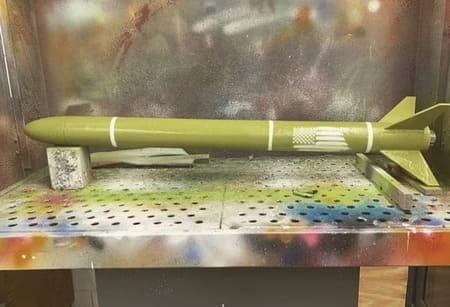
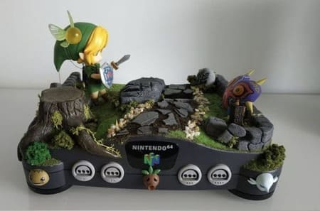

My wife and I posing for a picture infront of one of the many beautiful Cathedrals in Zocalo,
the famous historic plaza at the center of Mexico's Federal District.
Relaxing vacation with my wife as we rowed through Boston Harbor enjoying the view of the city.
Image displays our team's rocket standing in two pieces after its unsuccessful launch.
Using OpenRocket software, I designed my rocket from nose to fins.

After designing and building my high power rocket I gave it a paint job using army green and
added an American flag using a stencil.
Testing of my resistance circuit using a bread broad attached to a power supply where the LED
diode is being lit with respect to the amount of resistance being added by the blue component seen.
Simulation shows the movement of a vehicle's suspension system modeled as a Spring-Mass system
with a damping force that starts initially with a high oscillation but eventually decreases until left static.
Code sample includes the class initializing method that creates the class for a tic tac toe program
in Python, along with the class method that renders the data structure that represents the game board.
My Steiner violin where I primarily practice and play classical music.

One of my favorite hobbies is to play video games, primarily Nintendo. This is an image of my Nintendo 64
which my brother decorated with Legend of Zelda decorations.